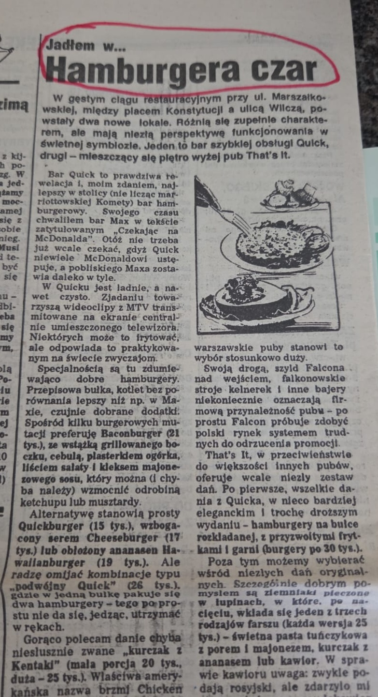

PAWEŁ CHMIELEWSKI
„Hamburgera czar” – Bar Quick i That's It
„Bar Quick to prawdziwa rewelacja i najlepszy w stolicy bar hamburgerowy...” – Piotr Bikont na łamach prasy, lata 90.
Przeczytaj biografięMiejsca,
które zostają
Opowieść o przestrzeniach, w których Warszawa świętuje swoje najważniejsze chwile.
Gościnność
wpisana
w DNA
Fundamentem grupy stała się Villa Foksal, która od ponad dwóch dekad znajduje się w rękach Pawła Chmielewskiego. To on przywrócił blask historycznym ogrodom, z pietyzmem łącząc tradycję z nowoczesnością i kontynuując wielopokoleniowe dziedzictwo tego adresu. Tworząc Villa Foksal Group, łączymy nasze unikalne przestrzenie i wieloletnie doświadczenie, aby najwyższa kultura gościnności trwała tu nieprzerwanie przez kolejne dekady.
Wszystko zaczęło się w XVIII wieku na terenach należących niegdyś do rodziny Czapskich. To tutaj, w sąsiedztwie podmiejskich rezydencji, w 1776 roku powołano do życia legendarny „Vauxhall” – ogród, który szybko stał się sercem warszawskiej rozrywki i salonem towarzyskim.
To właśnie w tym miejscu w 1789 roku Jean-Pierre Blanchard dokonał jednego z pierwszych w Polsce lotów balonem. Przez stulecia charakter tej przestrzeni ewoluował: od ogrodowej alei, przez pałacowe rezydencje rodu Zamoyskich, aż po międzywojenną Café Bodo i powstańcze barykady II linii obrony Powiśla. Dawne dzieje ulicy Foksal i jej salonowy charakter stanowią silną historyczną podwalinę działań Pawła Chmielewskiego na warszawskim rynku restauracyjnym i eventowym.
VILLA FOKSAL
25 lat historii, elegancja i autorska kuchnia w zabytkowym sercu Warszawy.
LOOKUP SKY EVENTS
Przyszłość i nowoczesność zawieszona 160 metrów nad ziemią w chmurach Warszawy.
CATERING VILLA FOKSAL
Sztuka kreacji kulinarnej i 25 lat doświadczenia w realizacji najbardziej prestiżowych eventów.